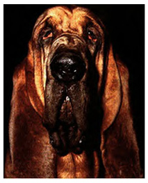

|


THE JOY OF BEING A HOUND
INDEX:
shoes : torches : safety : at
the start
: know
your hare
: countryside
code
: etiquette
checking : kicking out the
check
: false
trails (check backs) : back
checks
: regroups search parties : the on down
Shoes
Studded shoes
give better grip for cross country running than road running
shoes. A good example is Walsh fell running shoes, and these
can be obtained at Frank Elford’s sports shop in Plymouth
or Ironbridge Runner in Exeter. Over the last couple of years
all terrain cross training shoes with good grips have become
fashionable and these are readily available at most sports shops.
[^ index]
Torches
Bring a good
torch for hashes which will be run in the dark (from late August
to late April). Head torches are very popular with hashers as
they do away with the need to carry a hand torch, thus enabling
you to run naturally. They can be obtained from camping and outdoor
shops. Rechargeable batteries work out cheaper in the long run.
[^ index]
Safety
For moorland
runs in the winter it is advisable to carry a whistle, map and
compass if you can manage it. You may find it useful to take
a look at the map of the area where the run is going to be before
hand so that you have an idea where to go to get back to the
cars if you get separated from the pack. [^ index]
At The Start
Get to the
start on time - Drake H3 runs start at 7.30pm sharp and won’t
wait. Don’t park your car in a gateway or blocking a road
or track. If you have to block in another hasher’s car,
check with them first that it is okay to do so. [^ index]
Know Your Hare
Find out
who is going to be the hare for the run so you know who to ask
if you need any help. Try to listen to any announcements the
hare has to make before the run. However, this isn’t so
easy as the noise everyone else makes tends to drown them out!
[^ index]
Countryside Code
If you are
the last person through a gate make sure that it is properly
closed. It is better to walk through a field with livestock in
it in order to avoid panicking the animals. Don’t run over
crops. Make sure that any dogs you bring are under control and
put on a lead where necessary. It is a good idea to put a reflective
collar on your dog if you intend bringing it on a hash being
run in the dark. [^
index]
Etiquette
Make sure
that you always shout “On On” when you are following
the correct trail, in order to help the hashers behind you keep
in contact and to assist them to find the trail. Shouting is
the most important thing a hound can do because it is what keeps
the runners together so making it a hash and not just a run. Hashing is non-competitive cross country running
so fast runners should not try to run off and leave everyone
behind.
Look out for
the welfare of the other runners on the trail. Check who is around
you and tell the hare if someone is returning to the cars. Don’t
run off and leave the last runner on their own. [^ index]
Checking
When you
are one of the first to arrive at a check point (a circle) go
and look for the
correct trail. If you see sawdust, shout out the number of drops
you find as you go along e.g. “On One...On Two...On Three”
etc. When you are sure you have found the
correct trail shout “On On”. [^ index]
Kicking Out The Check
The hound
nearest the check when the correct trail is found should kick
the check circle through in the direction the trail goes. If
necessary return to the check to do this, because if a lone hound
at the back has to search for the trail at each check, he or
she will be very late back indeed. [^ index]
False Trails (Check Backs)
If you go
checking and come across a trail with a cross at the end of it
it means you
are following a false trail. Shout “Check Back” and
go back to the check point, where you can try again or wait for
someone else to find the correct trail. [^ index]
Back Checks
If you are
following the trail and come across a circle with a cross in
it you have found a back check. Shout “Back Check”
then retrace your steps whilst looking for the correct trail
somewhere off to the left or right of the trail you are on. [^ index]
Regroups
If the hash is getting very split up,
a regroup should ber called where the front runners stop and
wait for everyone else to catch up. After all, hashing is not
a race, it is much more fun to have other people to run with.
Drake H3 does not usually have formal regroups marked on its
trails, because with a bit of common sense (something not normally
associated with hashers) informal ones will work much better.
However, there are occasions when formal regroups can be of value,
such as at the top of a hill, if getting there has involved a
long climb. A marked regroup is indicated by laying the letters
'RG'. [^
index]
Search Parties
If someone
has not returned after the run don’t drive off to the pub.
All the members of the hash are responsible for each other’s
safety, and so if someone is missing we should all be available
to form search parties if necessary. [^ index]
The On Down
At the on
down circulate and make any new members feel welcome. Let the
scribe
know about anything of interest that happened before, on or after
the run. Pay your hash subscription and check that your name
is ticked off on the hash list - only people who pay are recorded!
Make sure you get a copy of the hash mag to find out where the
next run is going to be. [^ index]
|